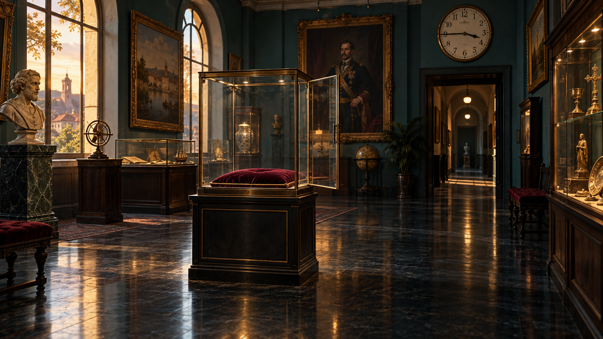

Jogo educacional · 6º ano
Prólogo
Quarenta e cinco minutos
O que você faz agora?
Escolha com base nas provas
Linha do tempo
Os últimos minutos na Galeria Aurora
- 15:40Última conferência
- 15:42Chave retirada
- 15:44Caixa no corredor
- 15:45Vitrine aberta
- 15:46Alarme registrado
- 15:51Acesso ao depósito
Mesmo lugar.
Novas perguntas.
0 de 12 vestígios
Preserve a cena antes de ouvir versões.
As primeiras provas aparecerão aqui.
“Um detalhe chama atenção.
Uma sequência demonstra.”